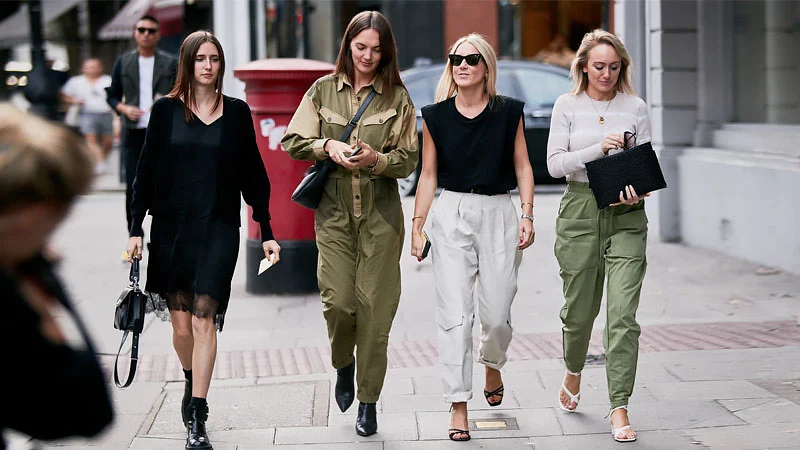
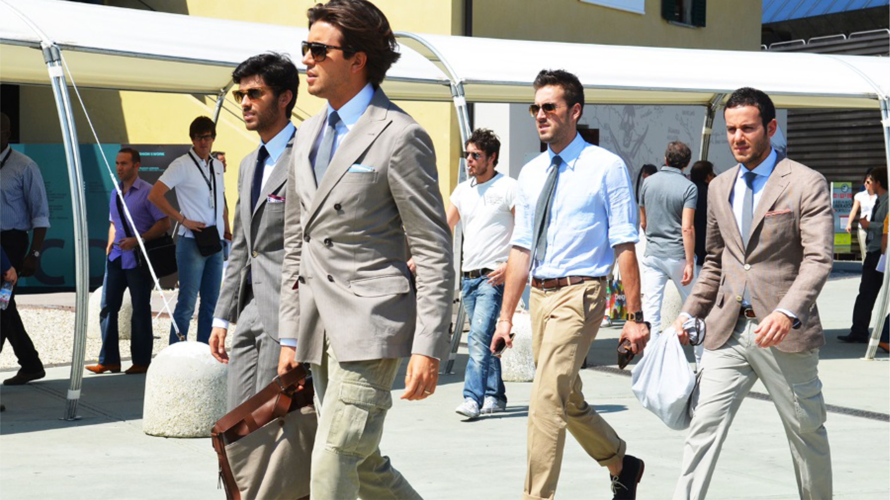
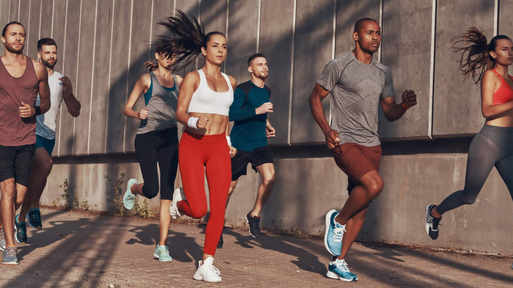
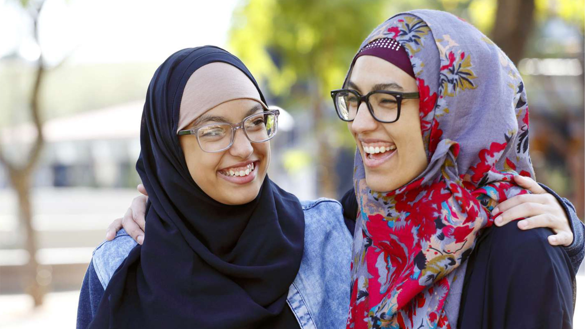

Product Category
Pakaian Casual
Pakaian kasual adalah jenis pakaian yang dirancang untuk digunakan sehari-hari dan tidak terikat pada aturan tertentu. Pakaian ini bisa berupa kaos, celana jeans, kemeja, rok, atau jaket. Pakaian kasual biasanya nyaman dan santai, cocok untuk acara santai seperti hangout dengan teman atau pergi ke pusat perbelanjaan.
Pakaian Formal
Pakaian formal adalah jenis pakaian yang dipakai untuk acara formal atau resmi seperti pesta pernikahan, rapat bisnis, atau acara-acara lain yang mengharuskan berpakaian sopan. Pakaian formal untuk pria biasanya terdiri dari jas, celana panjang, dan dasi, sedangkan untuk wanita dapat berupa gaun panjang atau rok panjang dengan blus atau kemeja formal.
Pakaian Olahraga
Pakaian olahraga adalah jenis pakaian yang dirancang khusus untuk digunakan saat melakukan aktivitas fisik seperti berlari, bersepeda, yoga, atau olahraga lainnya. Pakaian olahraga biasanya terbuat dari bahan yang elastis dan memiliki kemampuan menyerap keringat sehingga nyaman dipakai selama berolahraga. Pakaian olahraga dapat berupa celana pendek, kaos, atau jaket.
Pakaian Muslim
Pakaian Muslim adalah kategori pakaian yang dirancang khusus untuk pemakai yang mengikuti aturan berpakaian dalam agama Islam. Kategori ini mencakup berbagai macam pakaian, seperti jilbab, gamis, tunik, dan celana syar'i. Pakaian Muslim tersedia dalam berbagai desain dan warna yang syar'i, namun tetap modis dan elegan untuk dipakai dalam berbagai acara, seperti acara formal, santai, atau pernikahan.